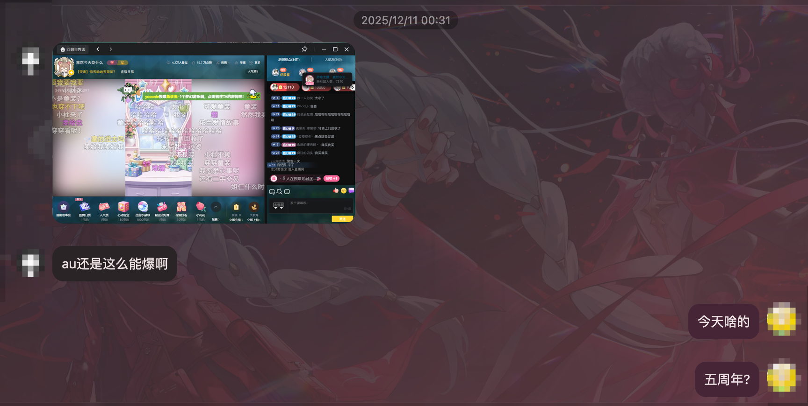
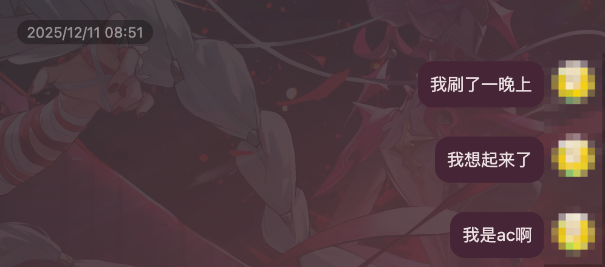
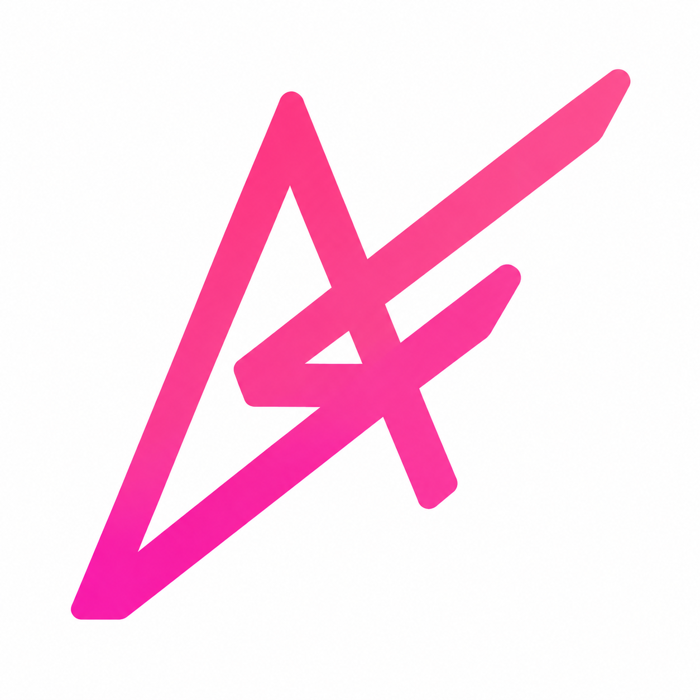
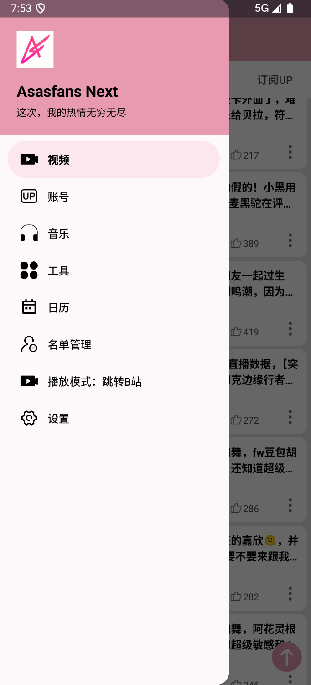

回旋后，我重构了 Asasfans-Next
我其实很久没有看过 A-SOUL 了。
可惜去年12月11日，我被陷害了


很巧的，这学期我有一门Android开发课程需要提交一份大作业
于是，我想起了停更很久的的 Asasfans 安卓客户端。
免责声明：这是一个基于我个人审美和使用习惯衍生出来的“分支”版本。它并不代表比原版更好，只是在功能的侧重点和视觉风格上有所不同。因为是自用向的重构，可能还存在一些没照顾到的边角 Bug，欢迎大家在评论区或 Issue 里反馈，我有空会尽量修。
为什么要重构？
上次使用Asasfans时，我还在读高中
我觉得这个项目真厉害，一个粉丝社群能够有如此层出不穷的二创热情，以至于能支撑起一个自己社群的聚合平台
那时我认为巴别塔永不倒塌，就像古罗马人在宏伟华丽的浴宫中吹着口哨，认为帝国就像身下的浴池一样，建在整块花岗岩上，将永世延续。
但现在人们知道，没有不散的宴席，一切都有个尽头。
扯远了，回到项目上来
旧版工程里有不少年代感很强的依赖、页面逻辑和 UI 写法。
在上一位维护者jiarandiana0307的fork帮助下很多功能是能跑的，但如果要继续加功能、修 Bug 或适配新系统，就会变得越来越吃力。
但既然都决定动手了，那就直接而是把主框架、页面结构和一些核心功能重新整理一遍吧。
于是就有了现在的 Asasfans-Next。

「开源」基于 Asasfans 的自用重构版分享：UI 升级与底层迁移
我重构了什么？
首先是主界面重构。旧版的底部导航被我换成了 Material 3 风格的侧边栏，视频、账号、音乐、工具、日历、名单管理和设置都统一放到了侧边栏里。

主界面大换血：去掉了旧版的底部导航，换成了标准的 Material 3 风格侧边栏。视频、账号、音乐、工具、日历、名单管理和设置等入口被统一收纳，界面变得更加清爽。
统一的名单管理：黑名单词、黑名单 UP 主、视频黑名单以及订阅 UP 主，现在都被集中到一个独立的页面来进行统一管理。
更完善的登录机制：接入了第三方 Bilibili 登录，支持二维码和官方 WebView 登录页两种方式，体验更加丝滑。
全新的视觉与品牌：项目正式更名为 Asasfans Next，不仅换上了新的图标，整体主题色也调整成了更具氛围感的粉色系 #E799B0。
技术栈和 Vibe Coding
这次整理里，项目的构建环境也更新了一轮：
- Android Gradle Plugin 升到
8.7.3 - Gradle 使用
8.11.1 - Kotlin Gradle Plugin 升到
1.9.22 compileSdk/targetSdk调整到34- 播放器迁移到 AndroidX Media3
- UI 主框架改成 Material 3 风格
- 网络请求继续使用 OkHttp / Gson 这一套比较朴素但稳定的方案
关于项目来源
Asasfans Next 保留了早期 A-SoulFan/as-as-fans 项目的历史来源。后续这个仓库会作为新的维护线继续整理和发布。
项目仍然遵循 GPL-2.0 协议。
需要强调的是:这个项目是非官方粉丝项目，和 Bilibili、A-SOUL 以及相关公司都没有关系。
最后
可能以后看 A 的时间会越来越少，可能生活会被学业、申请和其他乱七八糟的事情填满。但偶尔回头维护一下曾经喜欢过的社区工具，感觉也挺好的。
它不是什么很厉害的项目，也不一定会长期高强度维护，但至少在这个时间点，我确实认真把它重新整理了一遍。
如果你也感兴趣，可以去 GitHub 上看看：
https://github.com/LEN5010/Asasfans-Next
就先写到这里吧。
希望这次，我的热情无穷无尽。